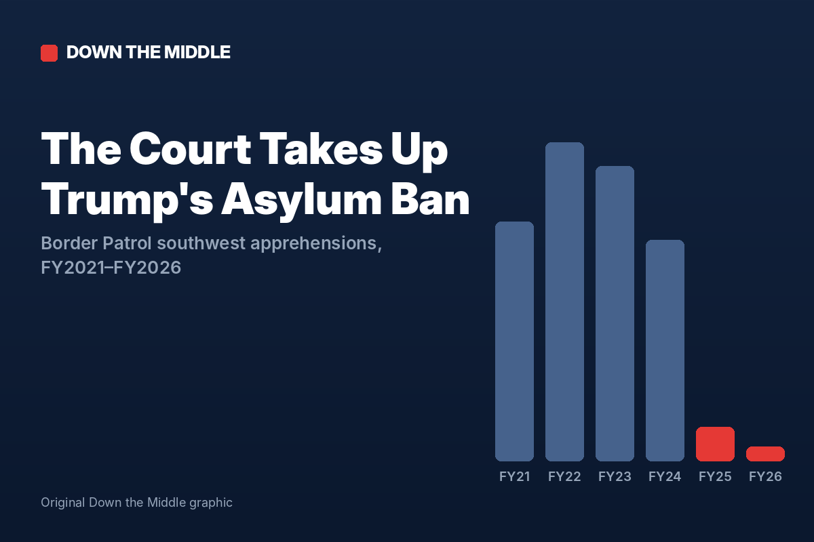
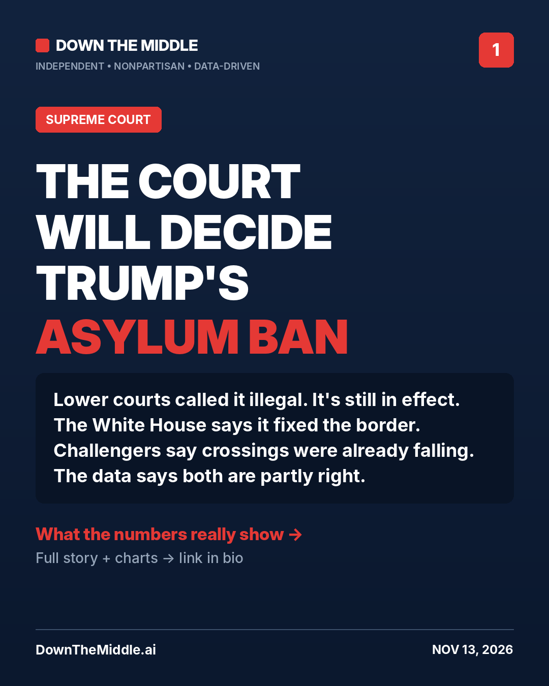
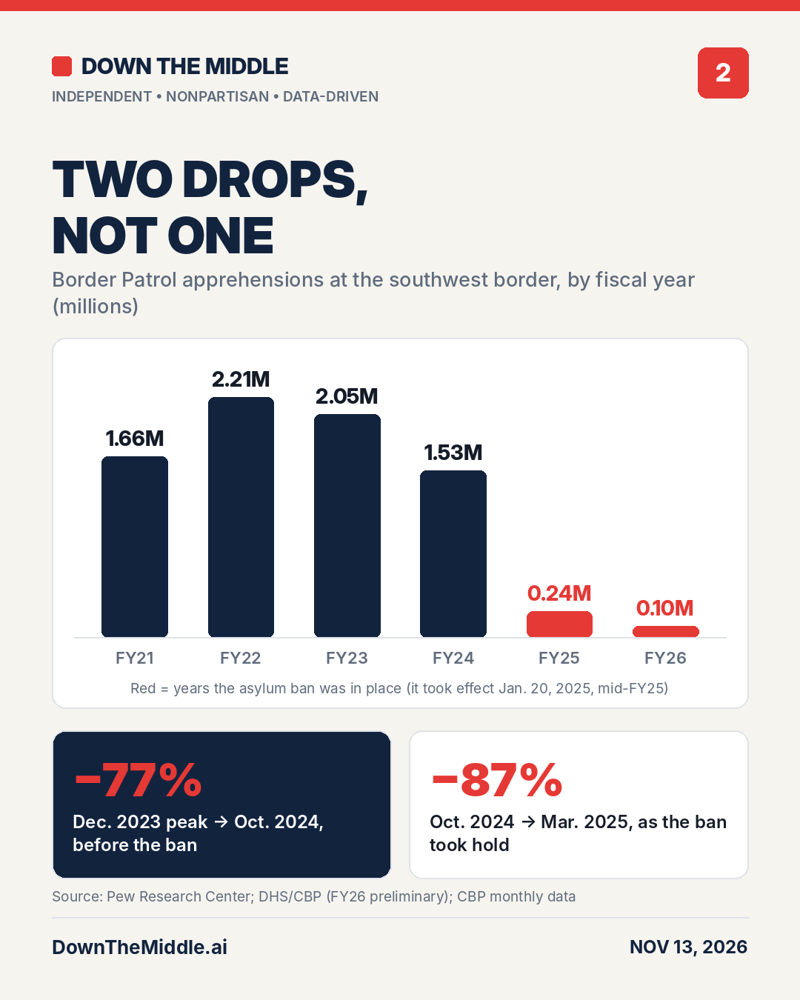

The Supreme Court Will Decide Trump’s Asylum Ban. Here’s What the Border Data Shows.
November 13, 2026 · Independent, nonpartisan analysis

On Friday the Supreme Court agreed to decide whether President Trump’s Inauguration Day proclamation barring asylum claims at the southern border is legal. Lower courts have ruled the policy unlawful, but it has stayed in effect while the appeal moves forward. Arguments will be heard this term, and a decision is expected by summer. [1]
The proclamation declared that the situation at the border was an “invasion” and categorically barred asylum applications. Solicitor General D. John Sauer calls it the administration’s “main tool” for stopping illegal crossings. The asylum seekers challenging it are represented by the ACLU and immigrant-rights groups. They argue that crossings were already falling before the ban, and that the policy strips away rights Congress wrote into law. [1] We went to the data to test both claims.
By the numbers
The documented figures behind the case.
What the Court is deciding
The question isn’t whether the policy works. It’s whether the president has the power to impose it. Trump relied on Section 212(f) of the Immigration and Nationality Act, which lets the president suspend the entry of groups of noncitizens. [3] U.S. District Judge Randolph Moss ruled in July 2025 that the proclamation set up “an alternative immigration system” with no basis in law. He found that it overrode protections Congress enacted, including the ability to seek protection from torture. [4] A divided D.C. Circuit panel later agreed, though Judge Justin Walker, a Trump appointee, dissented in part: he would have let the government deny asylum but not other forms of protection. [5] The White House called Moss’s ruling an invitation for anyone to enter illegally. DHS said the appeals ruling “will not be the last word.” [4] [5]
Insight 1
The data supports both sides, in part
The administration credits the ban with the collapse in border crossings, and the drop is real. Border Patrol apprehensions at the southwest border fell from 1.53 million in FY2024 to under 99,000 in FY2026. [6] [7] The challengers say crossings were already falling, and that is also true. Monthly apprehensions fell about 77% between the December 2023 peak and October 2024, all before Trump took office. Then they fell about another 87% between October 2024 and March 2025, as the ban took hold. [7] [8] [9] There were two drops, not one. Each side tends to cite only the one that helps its case.
Border Patrol apprehensions at the southwest border, by fiscal year
Red marks years when the asylum ban was in effect. It took effect Jan. 20, 2025, partway through FY2025. Hover or tap a bar for the exact figure.
FY2021–FY2025 totals are from the Pew Research Center, based on CBP data. FY2026 is DHS’s preliminary total. A fiscal year runs from October through September. [6] [7]
Two drops, not one
Border Patrol apprehensions at the southwest border in selected months.
December 2023 is from DHS. October 2024 through March 2025 are CBP’s monthly Title 8 apprehension counts; Title 8 is the regular immigration law, as opposed to the pandemic-era Title 42 expulsions. The FY2026 average is our calculation: DHS’s preliminary annual total divided by 12. January 2025 includes 19 days before the ban took effect. Policies other than the ban also changed during this period, including Biden’s June 2024 asylum restrictions and Mexico’s enforcement efforts, so this chart can’t isolate the ban’s effect alone. [7] [9]
Insight 2
The Court has changed since it last blocked an asylum ban
In December 2018, the Court voted 5–4 to keep Trump’s first-term asylum ban blocked. Chief Justice Roberts joined the four liberal justices. [11] One of those liberals, Justice Ginsburg, has since been replaced by Justice Barrett. In June 2026, in a related case, the Court ruled 6–3 that border agents may turn back asylum seekers before they set foot in the U.S. [10] The Court has also sided with the administration in most of its emergency rulings on immigration. [12] Still, the question in this case is different. The issue in June was where a person must be standing to claim asylum. This case asks whether a president can suspend the right to claim asylum altogether for people who are already on U.S. soil.
The legal path so far
Solid dots are rulings and official actions on this policy. Hollow dots are related cases, shown for context.
- Dec 2018Supreme Court
By a 5–4 vote, the Court refuses to let Trump’s first-term asylum ban take effect. Related case [11] - Jan 20, 2025White House
Trump’s proclamation declares an “invasion” at the southern border and bars asylum claims. [1] [3] - Jul 2025U.S. District Court
Judge Moss rules the proclamation unlawful and certifies a class of asylum seekers. [3] [4] - 2026D.C. Circuit
A divided appeals court panel affirms. The policy stays in effect while the government appeals. [5] [14] - Jun 25, 2026Supreme Court
In Mullin v. Al Otro Lado, the Court rules 6–3 that border agents may turn back asylum seekers at ports of entry. Related case [10] - Nov 13, 2026Supreme Court
The Court agrees to hear the asylum-ban case. Argument is this term, with a decision expected by summer 2027. [1] [2]
How each side makes its case
Same numbers, different stories
Each side’s position, described in our own words and checked against the data.
The administration
The challengers
Down the middle
This case will be argued as a fight over the border, but the Court’s job is narrower. It has to decide whether Congress gave the president the power to switch off asylum by proclamation. The numbers show the border is far quieter than it was in 2023. They also show that the decline began before this policy did. A ruling for the administration would make the ban permanent law, at least until Congress acts. A ruling for the challengers would restore asylum claims for people who cross between ports of entry. With Democrats taking control of Congress in January, either outcome lands on a new political landscape. [2]
What to watch
The briefing schedule: the case will be argued later this term. [1] The monthly CBP numbers: will crossings stay low while the Court decides? Congress: the new majority could write its own asylum rules, which could change the stakes of whatever the Court decides. The ruling: expected by the end of June 2027. [1]
Share it


Sources and primary documents
- [1] NewsNation / The Hill — Supreme Court will decide if Trump’s asylum restrictions are legal (Nov 13, 2026)
- [2] NBC News — Live updates, Nov 13, 2026 (Supreme Court agrees to decide asylum authority)
- [3] States Newsroom — Trump dealt loss as judge rejects executive order claiming ‘invasion’ at the border (Jul 2025)
- [4] Judge blocks ‘sweeping’ asylum crackdown after Trump declared ‘invasion’ at southern border (Jul 2025)
- [5] CNN via KEYT — Trump’s effort to bar migrants from claiming asylum at the border rejected, setting up possible Supreme Court showdown
- [6] Pew Research Center — Migrant encounters at the U.S.-Mexico border are at their lowest level in more than 50 years (Feb 2, 2026)
- [7] DHS — DHS announces lowest fiscal year border crossings in American history (Oct 16, 2026)
- [8] CBP — CBP releases October 2024 monthly update
- [9] CBP — Custody and transfer statistics, FY2025 (monthly Title 8 apprehensions)
- [10] SCOTUSblog — Justices side with Trump administration in border dispute over asylum seekers (Jun 25, 2026)
- [11] NBC News — Supreme Court rejects Trump’s asylum ban in 5-4 ruling (Dec 2018)
- [12] Reuters via KSL — Supreme Court to review government power to limit asylum processing
- [13] Bloomberg Government — Supreme Court says US can turn away asylum seekers at border (Jun 25, 2026)
- [14] UA.News, summarizing The Hill — US Supreme Court to consider Trump asylum restrictions (Nov 13, 2026)
- [15] RAICES, summarizing NOTUS — Trump asks the Supreme Court to back asylum ban at U.S.-Mexico border
"Apprehensions" means Border Patrol arrests between ports of entry at the southwest border. Figures for FY2026 are DHS's preliminary numbers. Percent changes and the FY2026 monthly average are Down the Middle's own calculations from the cited figures. Reflects reporting available November 13, 2026. This is analysis, not legal advice.